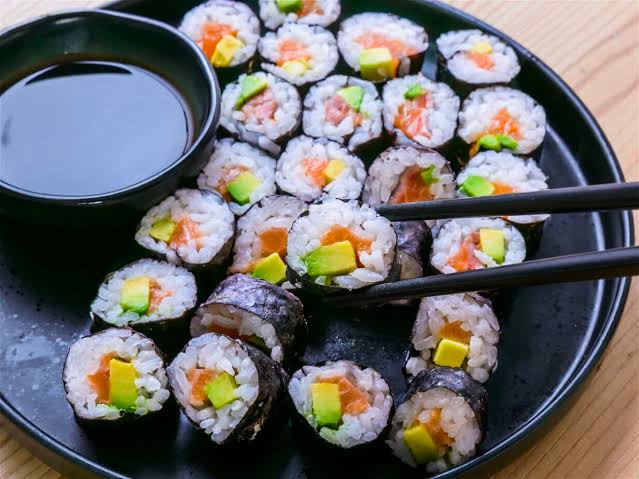

Traditional Food of Japan
Japanese food is known for fresh ingredients and simple flavors. Rice, fish, and noodles are very common.

Popular Foods
- Sushi
- Ramen
- Tempura
- Mochi
How to Eat a Meal
- Say "itadakimasu" before eating
- Eat with chopsticks
- Say "gochisousama" when you finish